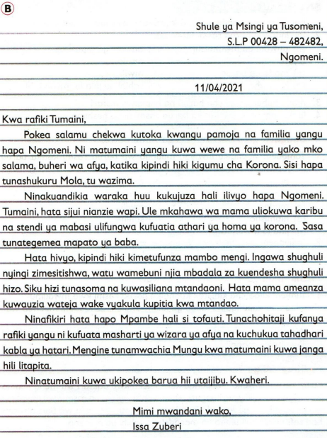
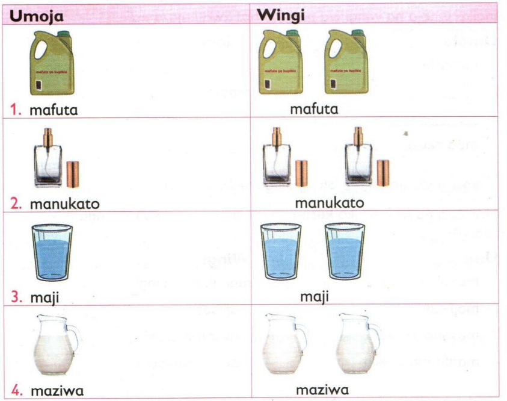

A. Tusikilize na kuzungumza
|
Maneno ya heshima na vyeo
Shughuli ya 1 Shughuli ya kikundi
Someaneni sentensi hizi
- Profesa Kidodi ni mtaalamu wa hali ya hewa.
- Daktari Rukia ana ujuzi katika utabibu wa ugonjwa wa saratani.
- Bwawa atakalochimba Mheshimiwa Babino litawafaa wakulima.
|
HEBU TAFAKARI
Je, maneno yaliyokolezwa rangi katika sentensi ulizosoma yanaonyesha nini? Jadilianeni.
|
|

- kuna maneno ya heshima yanayotumiwa kuonyesha vyeo vya watu.
- maneno hayo yanatumiwa kabla ya kutaja majina halisi ya watu hao.
- maneno hayo yakitumiwa na majina halisi huanza kwa herufi kubwa.
- mifano ya maneno hayo ni Profesa Kidodi na Mheshimiwa Babino
Shughuli ya 2 Shughuli ya wawiliwawili
- Tambueni maneno ya heshima yanayoonyesha vyeo katika chati hii.

- Elezaneni maana za maneno hayo kama yanavyotumika katika
mawasiliano ya kila siku.
- Tungeni sentensi mkitumia maneno mliyotambua.
- Badilishaneni kazi zenu darasani ili mzitolee maoni.
|
Shughuli ya 3 Shughuli ya kikundi
- Undeni mazungumzo mafupi mkitumia maneno ya heshima yanayoonyesha vyeo.
- Igizeni mazungumzo mliyounda.
|
Shughuli ya 4 Shughuli ya ziada
- Shirikiana na mzazi au mlezi wako kutambua maneno ya heshima
yanayoonyesha vyeo katika jamii yenu. Andika maneno hayo daftarini
- Tunga sentensi ukitumia maneno uliyoandika.
- Wasomee wenzako darasani sentensi ulizotunga ili wazitolee maoni.
|
Shughuli ya 5 Tuhudumie jamii
Wafundishe wenzako nyumbani kutumia maneno ya heshima yanayoonyesha vyeo.
|
Kusoma kwa mapana
Matini ya kadijitali
Shughuli ya 1 Shughuli ya kikundi
- Jadilianeni kinachoendelea katika picha hii.
-
- Jadilianeni hatua za kiusalama zinazofaa kuchukuliwa tunapotumia mtandao.

- Kwa nini ni muhimu kutowasiliana na watu usiowajua mtandaoni? Elezaneni.
- Mweleze mwenzako umuhimu wa utunzaji wa vifaa vya kidijitali vinavyotumiwa kusoma.
- Je, kunaweza kutokea nini kama hutatoa habari kwa mzazi, mlezi au mwalimu unapopata ujumbe kutoka kwa mtu usiyemjua mtandaoni?
|
- kuzingatia hatua za kiusalama ninapotumia vifaa vya kidijitali.
- kusakura kwenye tovuti salama tu.
- kutunza vifaa vya kidijitali.
- kumweleza mwalimu, mzazi au mlezi ninapopata habari kutoka kwa mtu nisiyemjua.
Shughuli ya 2 Shughuli ya wawiliwawili
- Mkiongozwa na mwalimu, sakureni kwenye tovuti salama ili kujichagulia matini ya kusoma. Zingatieni hatua za kiusalama.
- Someni matini hiyo kisha mwandike madaftarini maelezo mafupi kuhusu mliyoyasoma.
- Andikeni maneno mapya madaftarini kisha mtumie kamusi kuyaeleza.
- Fungueni faili katika kifaa cha kidijitali na muipe jina.
- Nakilini maelezo mliyoandika madaftarini kwenye faili hiyo.
- Hifadhini maelezo mliyoandika kisha mfunge faili.
|
Shughuli ya 3 Shughuli ya kikundi
- Tembeleeni tovuti mbalimbali salama mtandaoni na kusoma kuhusu misimu ya mwaka.
- Andikeni habari mlizopata kuhusu misimu mbalimbali ya mwaka madaftarini.
- Wasilisheni kazi zenu darasani ili wenzenu wazitolee maoni.
|
Shughuli ya 4 Tuhudumie jamii
- Waeleze wenzako nyumbani kuhusu misimu ya mwaka uliyojifunza.
- Waombe wakueleze wanayojua kuhusu misimu hiyo ya mwaka.
- Jadilianeni jinsi ya kujiandaa wakati wa misimu mbalimbali ya mwaka
|
Barua rasmi
Shughuli ya 1 Shughuli ya kikundi

Maswali
- Tambueni barua rasmi kati ya barua mlizosoma.
- Kwa nini mnafikiri barua mliyochagua ndiyo barua rasmi? Elezaneni.
|
- barua rasmi huandikwa kwa kuzingatia muundo maalumu
- muundo wa barua rasmi huwa na-
| (a) anwani ya mwandishi |
(b) anwani ya mpokeaji |
| (c) tarehe |
(d) mtajo |
| (e) mada ya barua |
(f) mwili |
| (g) hitimisho |
(h) sahihi na jina la mwandishi |
- mada hubeba kiini cha barua na hupigiwa mstari.
- lugha inayotumiwa katika barua rasmi ni ya heshima.
Shughuli ya 2 Shughuli ya wawiliwawili
- Tambueni vipengele hivi vya muundo wa barua rasmi katika barua mliyosoma.
| (a) anwani ya mtumaji |
(b) anwani ya mpokeaji |
| (c) tarehe |
(d) mtajo |
| (e) mtajo |
(f) mwili |
| (g) hitimisho |
(h) sahihi |
| (i) jina la mwandishi |
- Jadilianeni umuhimu wa vipengele vya muundo vilivyotajwa katika swali la 1. Andikeni majibu yenu madaftarini.
|
Shughuli ya 3 Shughuli ya wawiliwawili
- Tumieni kifaa cha kidijitali kuandika barua rasmi kwa mwalimu mkiomba kujiunga na klabu ya kilimo shuleni. Zingatieni muundo wa barua rasmi
- Wasambazieni wanafunzi wenzenu na mwalimu barua yenu mtandaoni ili waitolee maoni.
|
Shughuli ya 4 Shughuli ya kibinafsi
Mzazi au mlezi wako amepanga kukupeleka kwa daktari wa meno Ijumaa wiki ijayo kwa ajili ya uchunguzi. Andika daftarini barua rasmi kwa mwalimu ukiomba ruhusa ya kwenda hospitalini. Zingatia muundo wa barua rasmi, hati safi, uakifishaji ufaao na maendelezo sahihi ya maneno.
|
Shughuli ya 5 Shughuli ya ziada
Shirikiana na mzazi au mlezi wako kujadili umuhimu wa barua rasmi katika mawasiliano. Andika maelezo yako daftarini.
|
Umoja na wingi wa nomino
Ngeli ya YA-YA
Shughuli ya 1 Shughuli ya wawiliwawili
Someni nomino katika jedwali hili.

HEBU TAFAKARI
Je,mmegundua nini kuhusu umoja na wingi wa nomino mlizosoma? Jadilianeni.
|
- ngeli ya YA-YA huwa na nomino za vitu visivyokuwa na uhai
- nomino hizo-
- hubaki vilevile katika umoja na wingi
- hazihesabiki
- mifano ya nomino katika ngeli ya YA-YA ni kama mafuta, majira,
madhara, manukato na madaraka.
|
Shughuli ya 2 Shughuli ya wawiliwawili
- Mkielekezwa na mwalimu, undeni gurudumu la maneno.
- Tambueni nomino za ngeli ya YA-YA kutoka kwa maneno yaliyoandikwa kwenye gurudumu hilo.
- Andikeni maneno hayo madaftarini.
|
Shughuli ya 3 Shughuli ya kibinafsi
Andika umoja na wingi wa nomino hizi kwa kujaza nafasi.
| Umoja |
Wingi |
| 1.marashi |
_______ |
| 2._______ |
maasi |
| 3.________ |
madini |
| 4.maamkuzi |
________ |
|
Shughuli ya 4 Shughuli ya wawiliwawili
Shirikiana na mwenzako kusoma umoja na wingi wa mafungu haya ya maneno.
| Umoja |
Wingi |
| 1.manukato mengi |
manukato mengi |
| 2.maji safi |
maji safi |
| 3.mavuno mazuri |
mavuno mazuri |
| 4.maafa makubwa |
maafa makubwa |
|
Shughuli ya 5 Shughuli ya kibinafsi
Jaza nafasi hizi.
| Umoja |
Wingi |
| 1.mate yangu |
__________ |
| 2.________ |
mafuta mapya |
| 3.maumivu makali |
___________ |
| 4._________ |
majivuno hayo |
|
Umoja na wingi wa sentensi
Ngeli ya YA-YA
Shughuli ya 1 Shughuli ya kikundi
Someni sentensi hizi kwa zamu.
| Umoja |
Wingi |
| 1. Majira ya kipupwe yanatatiza. |
Majira ya kipupwe yanatatiza. |
| 2. Mazingira yaliyotunzwa hupendeza. |
Mazingira yaliyotunzwa hupendeza. |
| 3. Maarifa yanayofaa hutiliwa maanani. |
Maarifa yanayofaa hutiliwa maanani. |
| 4. Mavuno mazuri yanafurahiwa. |
Mavuno mazuri yanafurahiwa. |
| 5. Maoni ya mwalimu kwa kazi yangu yalinifaa. |
Maoni ya walimu kwa kazi zetu yalitufaa. |
HEBU TAFAKARI
Je, mmegundua nini kutokana na viambishi vilivyokolezwa rangi? Jadilianeni.
|
nomino za ngeli ya YA-YA huchukua kiambishi ya- katika umoja na wingi tunapotunga sentensi.
Shughuli ya 2 Shughuli ya kibinafsi
Tambua kwa kupigia mstari viambishi vya ngeli ya YA-YA kwenye sentensi hizi.
- Maziwa yana madini muhimu kwa afya bora.
- Manukato ninayouza yananipa faida kubwa.
- Maji ya mvua yaliyohifadhiwa kwenye bwawa yatatumika kwa kilimo.
- Tuzingatie matumizi yafaayo ya dawa ili tusipate madhara.
- Maasi yake yalisababisha atiwe mbaroni.
|
Shughuli ya 3 Shughuli ya kibinafsi
- Sikiliza kwa makini sentensi zitakazosomwa na mwalimu darasani.
- Andika daftarini wingi wa sentensi ulizosikiliza.
|
Shughuli ya 4 Shughuli ya wawiliwawili
Tumieni nomino zifuatazo kutunga sentensi katika hali ya umoja na wingi. Zingatia viambishi vya ngeli ya YA-YA.
- (a) mafuta
- (b) maumivu
- (c) mazingira
- (d) maskani
- (e) manufaa
|
Shughuli ya 5 Shughuli ya kibinafsi
Jaza nafasi hizi kwa viambishi vya ngeli ya YA-YA.
- Maji___liyotekwa na Amina ni ya kunywa.
- Nimetoa masizi ambayo ___likuwa kwenye chungu cha kupikia.
- Masozo ya chajio___litiwa ndani ya friji.
- Masomo ya kiufundi ___mewanufaisha vijana wengi.
- Wasanii wenye maleba ____liyochekesha walitutumbuiza
|